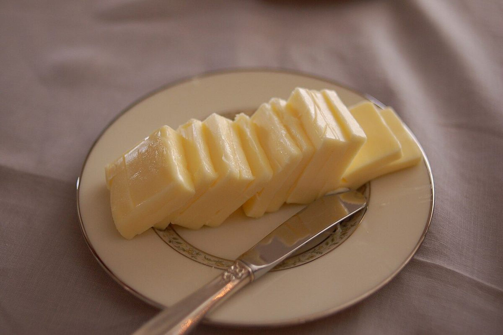

パン
パン
取り扱いのパン・価格は準備中です。下の写真はイメージで、お店の商品ではありません。
書き込む欄(準備中)
下の見出しは掲載イメージを示す仮のもので、実際に扱っているという意味ではありません。
- 食パン準備中
- バゲット準備中
- 丸いパン準備中
- クロワッサン準備中
- トースト用準備中
- 季節のパン準備中
イメージの写真





パン
取り扱いのパン・価格は準備中です。下の写真はイメージで、お店の商品ではありません。
下の見出しは掲載イメージを示す仮のもので、実際に扱っているという意味ではありません。
